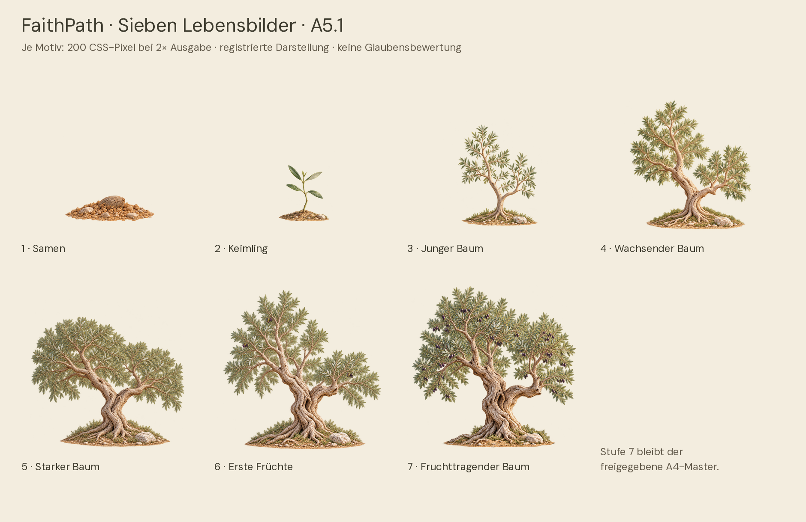

FaithPath · A5.1 FINAL
Der lebendige Olivenbaum
Sieben zusammenhängende Lebensbilder. Sichtbarer lokaler Wind. Die freigegebene Lichtkrone bleibt erhalten.
Isolierte Designstudie zur gemeinsamen Abnahme. Keine App-Integration und kein Deployment. Echte iPhone-/Safari-/VoiceOver- und Akkutests sind offen.
Zuerst die Bewegung ansehen
Video separat öffnen · Mobile Stufenwechsel

Interaktive Galerie lokal starten
PDF, PNG und MP4 können direkt geöffnet werden. Die interaktive ES-Modul-Galerie benötigt HTTP. Im entpackten Ordner:
python3 -m http.server 4751 --bind 127.0.0.1Dann http://127.0.0.1:4751/ öffnen. Keine Internetdienste oder Benutzerkonten nötig. Auf dem iPhone benötigt die isolierte Vorschau eine separat freigegebene Hosting-/Testverbindung; es wurde keine veröffentlicht.
Nachweise
245 bestehende App-Tests, 10 neue Unit-Tests, 22 Browser-Prüfgruppen, 352 mobile Layoutfälle, 12 Axe-Scans. Keine physische Geräteabnahme.
Quellcode und technische Verträge: ARCHITEKTUR.md. Geräteprüfbogen: IPHONE_ABNAHME.md. Alle bisherigen App-Dateien und Wachstumsregeln sind unverändert.